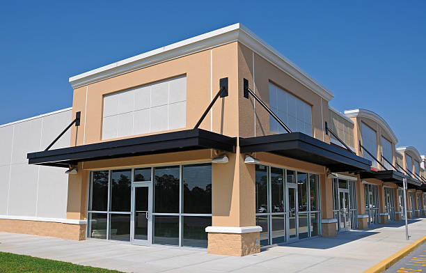

.svg)
Our Backstory
Spin City Music started as a small, family owned business called Spin City Records in the late 1970's here in Austin, Texas. The store quickly became a neighborhood staple and slowly grew to include records of all genres, past in present. Over the decades, the store gained popularity and has been outgrowing is tiny footprint. Just last year, Spin City Records rebranded into Spin City Music and moved location to a brand new store over 3 times the size of the last one. Spin City Music hopes to provide more than just vinyl records to the community, but also used and new instruments and equipment.
Address:
511 S Congress Ave
Austin, TX 78704
United States
Our Future
While online ordering is not yet available, our website shows the many different products that we have in our store for you to come purchase. As Spin City Music continues to grow, we hope to add online shopping and even another storefront in Austin. For now, though, come enjoy our new home and browse our vast selection of music!